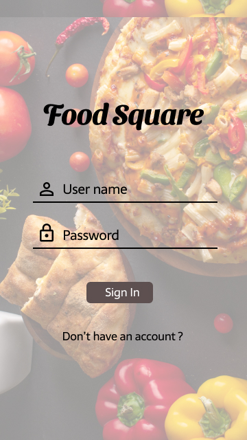
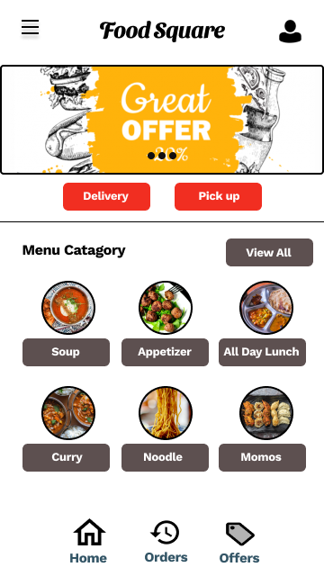

<!DOCTYPE html>
<html lang="en">

<head>
  <meta charset="utf-8">
  <meta content="width=device-width, initial-scale=1.0" name="viewport">

  <title></title>
  <meta content="" name="description">
  <meta content="" name="keywords">

  <!-- Favicons -->
  <link href="assets/img/favicon.png" rel="icon">
  <link href="assets/img/apple-touch-icon.png" rel="apple-touch-icon">

  <!-- Google Fonts -->
  <link href="https://fonts.googleapis.com/css?family=Open+Sans:300,300i,400,400i,600,600i,700,700i|Raleway:300,300i,400,400i,500,500i,600,600i,700,700i|Poppins:300,300i,400,400i,500,500i,600,600i,700,700i" rel="stylesheet">

  <!-- Vendor CSS Files -->
  <link href="assets/vendor/aos/aos.css" rel="stylesheet">
  <link href="assets/vendor/bootstrap/css/bootstrap.min.css" rel="stylesheet">
  <link href="assets/vendor/bootstrap-icons/bootstrap-icons.css" rel="stylesheet">
  <link href="assets/vendor/boxicons/css/boxicons.min.css" rel="stylesheet">
  <link href="assets/vendor/glightbox/css/glightbox.min.css" rel="stylesheet">
  <link href="assets/vendor/swiper/swiper-bundle.min.css" rel="stylesheet">

  <!-- Template Main CSS File -->
  <link href="assets/css/style.css" rel="stylesheet">

  <!-- =======================================================
  * Template Name: MyResume - v4.7.0
  * Template URL: https://bootstrapmade.com/free-html-bootstrap-template-my-resume/
  * Author: BootstrapMade.com
  * License: https://bootstrapmade.com/license/
  ======================================================== -->
</head>

<body>

  <main id="main">

    <!-- ======= Portfolio Details Section ======= -->
    <section id="portfolio-details" class="portfolio-details">
      <div class="container">

        <div class="row gy-4">

          <!-- <div class="col-lg-8">
            <div class="portfolio-details-slider swiper">
              <div class="swiper-wrapper align-items-center">

                <div class="swiper-slide">
                  
                </div>

                <div class="swiper-slide">
                  
                </div>

                <div class="swiper-slide">
                  
                </div>

              </div>
              <div class="swiper-pagination"></div>
            </div>
          </div> -->

          
            <!-- <div class="portfolio-info">
              <h3>Project information</h3>
              <ul>
                <li><strong>Food Square Mobile Ordering App</strong></li>
                
              </ul>
            </div> -->
            <div class="portfolio-description">
              
              <div>
                
              </div>
              <div>
                
              </div>
              <div>
                
              </div>
              <div>
                
              </div>
              <div>
                
              </div>
              <div>
                
              </div>
              
              <div>
                
              </div>
              <div>
                
              </div>
              <div>
                
              </div>
              <div>
                
              </div>
              <div>
                
              </div>
              <div>
                
              </div>
              

             <!-- <p></p>
								<h3>The Problem  </h3> If flowers shop is not close by then it is a hassle to go to the flower shop, order and then carry them. Sometime it is hard to be sure
                   about the quality of the online products and services
                </p>	
                <h3>The Goal </h3> To design an incredibly simple way to find the floral bouquet that matches a customer’s needs.

              </p>
              <h3> Research</h3>
                <p>I created a research plan that starts with conducting 1:1 interviews aiming to answer questions on current buyer behavior and attitudes toward online ordering of flowers.
                  I recruited 5 participants. Their ages ranged from 18 to 30 years old. I’ve also Performed a competitive analysis on both direct and indirect competitors.
                </p>

              <h3>User Pain Points</h3>
                <p>
                  
                </p>
                <P>Most people were concerned about the appearance and product quality that it wouldn’t reflect that was on the website to what they were going to receive during delivery.
                   This is a major concern because in a retail store the consumer knows exactly what they are buying whereas online the pictures may not necessarily reflect the final product.
                   Price and convenience was another factor that was important to the customer, they expect more competitive pricing and shipping from an ecommerce store compared to retail.
                </p>
                <h3>Competitive Analysis</h3>
                <p>
                  
                  </p>
                 
                  <p>	Our competitive analysis indicates that although there are many big brand stores selling flowers, they did not necessarily offer shipping or free shipping at all — the information regarding the services that were offered differed from store to store and at times was confusing. There is definitely room for improvement — one could offer 
                    free shipping in their local market on all orders — this would be added value for the consumer. After consumer comparison  we came to the following conclusions:
                   
                    <li> The scent, Appearance and freshness are powerful motivators when purchasing flowers, and this is one of the main reasons that people like to purchase from a florist shop in person as opposed to shopping online</li>
                      <li>  Customers often come in when they are in the area and do not necessarily go specifically for flowers</li>
                        <li>  Customers like to be able to touch and see the flowers in person prior to making the purchase</li>
                          <li>  Most customer service inquiries are regarding custom arrangements</li>
                  </p>
                  <p>As a result of the survey and one user interview, we determined that the primary concern for purchasing flowers online was a potential for quality issues, and losing the personalized 
                    touch of going through the florist shop and browsing for just the right bouquet</p>

                  <h3>Affinity Diagram</h3>
                  <p>We then put each piece of the qualitative informations (interviews, contextual inquiry, survey short answers) on to sticky notes and stick them to a wall and categorizing them. 
                    Also, we used blue sticky notes to represent all the data regarding online experiences. From this, we were hoping to better understand and get some insight that would contribute to our persona,
                     user flow and feature prioritization.</p>
                  <p>
                    
                    </p>
                  
                <p>  <b> Sorting and Analysing data </b></p>
                <p>
                    <li>Appearance — people expect to receive the exact product as in the picture on the website.</li>
                    <li> Cost — people expect more competitive pricing online.</li>
                      <li>Convenience — people want to be able to order their flowers quickly and easily.</li>
                        <li> Product Quality — people expect to receive the same quality flowers as if they went to the florist themselves to pick them out.</li>
                    <li>Variation — people expect a good variation of products just as if they were in a retail store</li></p>
                    <p>After analyzing the affinity diagram and organizing the information, we were able to create two (2) personas:</p>
                 
                  <p>Upon research and talking to a lot of my friends from different organizations, colleagues and extensive search on google has given me enough data, to sum up,
                  their experience into the following two personas.
                  </p>
                  <p></p>
               <p></p>   
               <p></p>

                              
                <h3>User Flow</h3>
                  <p>
                  
                  </p>
                  <p>
                  The purpose of the user flow was to capture the sequence a customer would have to go through in order to navigate the ecommerce website. The user flow diagram was a low stakes approach in 
                  illustrating and the user experience before moving forward to the paper wireframes (low fidelity). From there we were able to move forward in creating a site map for the website where all the
                   pages were identified and ultimately created for the website.</p>

                  <h3> Design / Build</h3>
                  <p>Throughout this project, my sketchbook proved invaluable time and time again. Being able to quickly
                  iterate with my sketchbook, I could create and alter ideas with the stroke of a pen. This enabled me to get instant feedback
                  from my peers on marketing and product concepts, allowing me to iterate on concepts rapidly. Wireframes are used early in the
                  development process to establish the basic structure of a web app before visual design and content is added. In the ideation phase
                  I created paper wireframes with three different screen sizes.
                  </p>
                  
                    <h3>Paper Wireframes</h3>
                    <p>After we defined our user flows and site map, we started designing the low fidelity paper prototypes. The design of the website focused on five (5) key elements — appearance, cost, convenience, product quality and variation.</p>
                  <p>
                    
                    </p>
                  
                    <h3>3 Different Screen Sizes</h3>
                  <p>
                    
                    </p>
                 
                    
                    
                    
                    
                    <h3>Product Solution</h3>
                                    
                    
                    <P>This is the final design of my florist web app.
                    </P>
                    <h3>Hi-fidelity prototype of web application</h3>
                    <p>
                    
                    </p>
                    
                    <h3>Hi-fidelity prototype of mobile application</h3>
                    <p>
                    
                    </p>
                    
                    
                    
                    
                    <h3>Takeaways</h3>
                    <p>During the course of creating this project, I learned so many new things like. How to do research, draw paper
                    wireframes, low-fidelity prototype, high-fidelity prototype, how to take interview etc. Usability studies
                    and peer feedback influenced each iteration of the web app’s designs.
                    
                    
                    </p> -->
                    
                
                    

            </div>
          

        </div>

      </div>
    </section><!-- End Portfolio Details Section -->

  </main><!-- End #main -->

  <div id="preloader"></div>
  <a href="#" class="back-to-top d-flex align-items-center justify-content-center"><i class="bi bi-arrow-up-short"></i></a>

  <!-- Vendor JS Files -->
  <script src="assets/vendor/purecounter/purecounter.js"></script>
  <script src="assets/vendor/aos/aos.js"></script>
  <script src="assets/vendor/bootstrap/js/bootstrap.bundle.min.js"></script>
  <script src="assets/vendor/glightbox/js/glightbox.min.js"></script>
  <script src="assets/vendor/isotope-layout/isotope.pkgd.min.js"></script>
  <script src="assets/vendor/swiper/swiper-bundle.min.js"></script>
  <script src="assets/vendor/typed.js/typed.min.js"></script>
  <script src="assets/vendor/waypoints/noframework.waypoints.js"></script>
  <script src="assets/vendor/php-email-form/validate.js"></script>

  <!-- Template Main JS File -->
  <script src="assets/js/main.js"></script>

</body>

</html>